Checklist e primeira NF-e
No ambiente de testes do ERP da Olist, você confere se a emissão está pronta para faturar e monta a primeira NF-e de saída. Dá para incluir a nota em Vendas > Notas Fiscais ou gerar a nota a partir de um pedido de venda, e deixar o lote pendente pronto para autorização em homologação.
Pré-requisitos
- Para gerar a nota a partir do pedido, é preciso ter um pedido de venda já existente.
Importante
- A lista avisa que a conta está no ambiente para testes de notas fiscais. O link alterar ambiente é o caminho mostrado para gerar notas com valor fiscal.
- Notas rejeitadas precisam ser corrigidas antes de serem reenviadas.
- No painel do lote, só serão enviadas notas emitidas após 13/10/2026.
- Para autorizar ou enviar o lote, a tela acessa um dispositivo de segurança antes de mostrar o painel.
Instruções
Conferir a configuração para faturar
-
Na página inicial, no Guia inicial, abra Configure a emissão da nota fiscal e acione configurar para faturar.
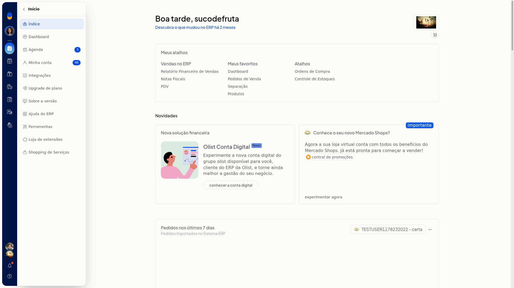
-
Na tela de configuração concluída, leia que já é possível emitir as notas fiscais e escolha Revisar as configurações ou Ir para tela de Notas Fiscais.
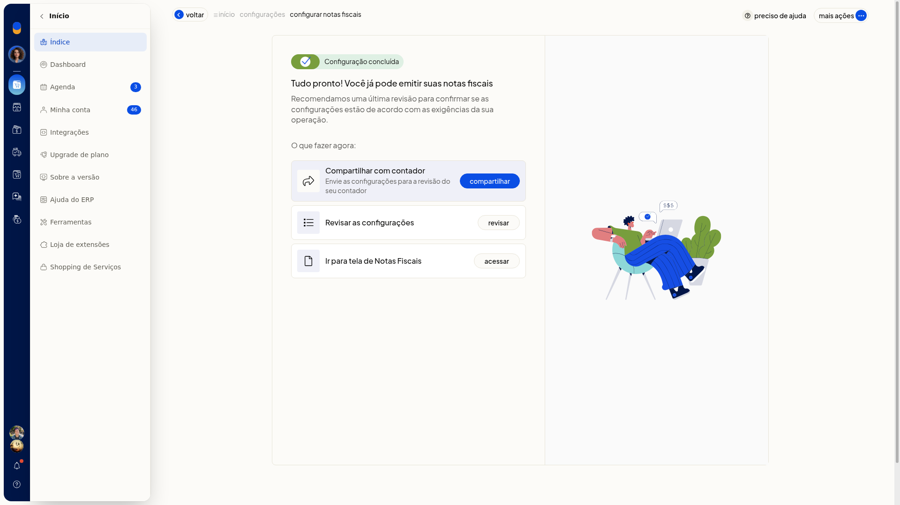
-
Em Revisar as configurações, confira Ambiente das notas fiscais em ambiente de testes, as pendências de Dados da empresa, certificado digital e NFCe, e as seções de NFe, naturezas, DIFAL, GNRE, intermediadores, marcadores, entrada e serviço. A configuração para faturar fica concluída no ambiente de testes, e você pode seguir para Notas Fiscais.

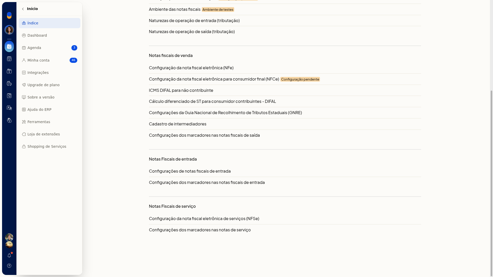
Incluir a NF-e pela tela
-
Acesse Vendas > Notas Fiscais e confira o aviso de ambiente para testes de notas fiscais.


-
Clique em Incluir nota fiscal.
-
Confira os dados já trazidos da nota. Nenhum dos campos abaixo é obrigatório.
Dados da nota
- Tipo de Saída
- Série
- Número e datas
- Natureza
- Finalidade
- CRT
- Consumidor final
- Cálculo automático de imposto
Destinatário
Preencha com dados fictícios.
- Tipo de pessoa
- Contribuinte
- Nome
- CPF, no formato de CPF
- CEP, no formato de CEP
- Endereço
- Número
- Bairro
- Cidade
- UF
- Fone, no formato de telefone
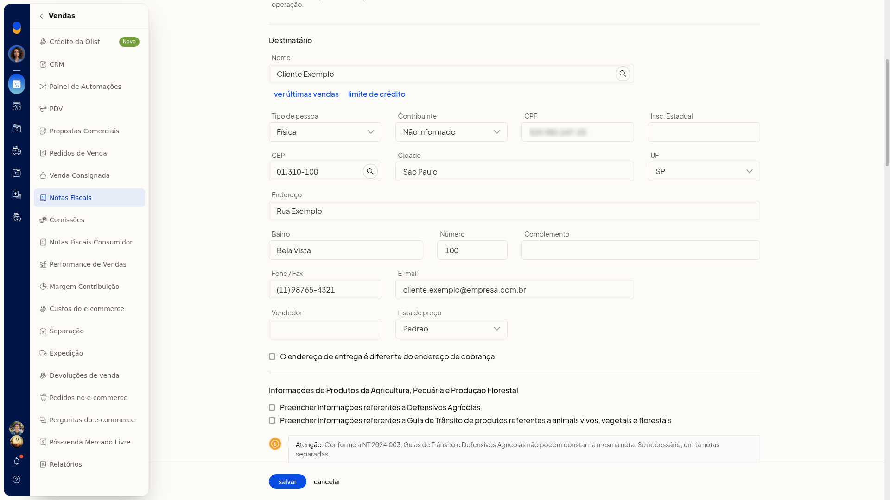
- Confira o preenchimento. Salvar grava a inclusão da NF-e de saída no ambiente de testes. Cancelar descarta a inclusão.
Gerar a NF-e a partir do pedido de venda
-
Acesse Vendas > Pedidos de Venda.
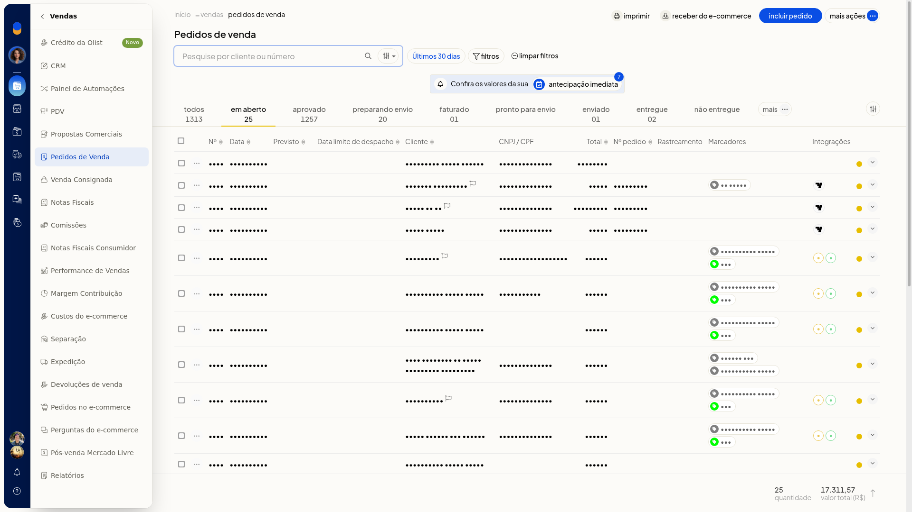
-
Na linha do pedido, abra ••• e clique em Gerar nota fiscal.
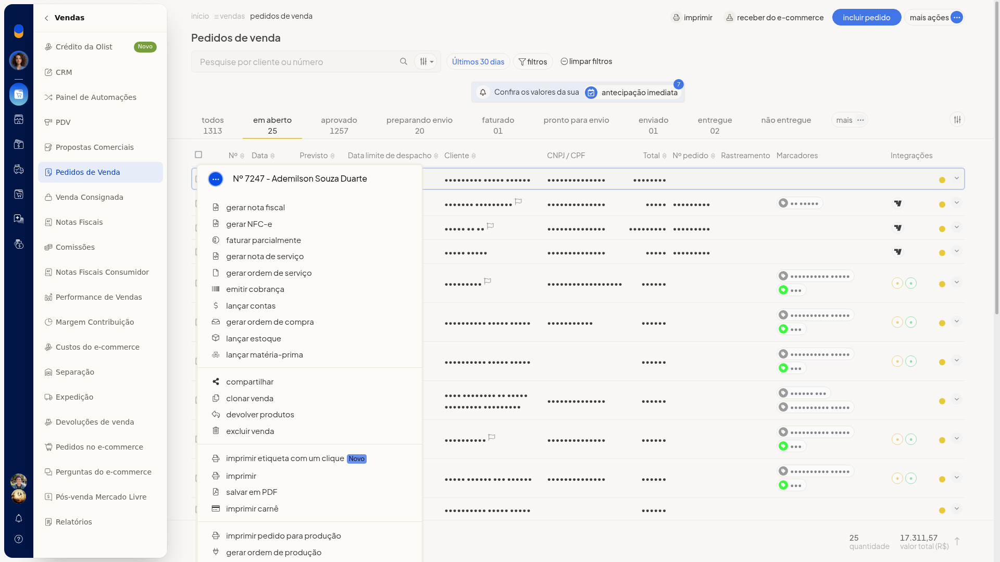
-
Confira a NF-e aberta, ainda não salva, com tipo de saída, finalidade, destinatário, frete, itens, cálculo do imposto e total da nota já preenchidos a partir do pedido.
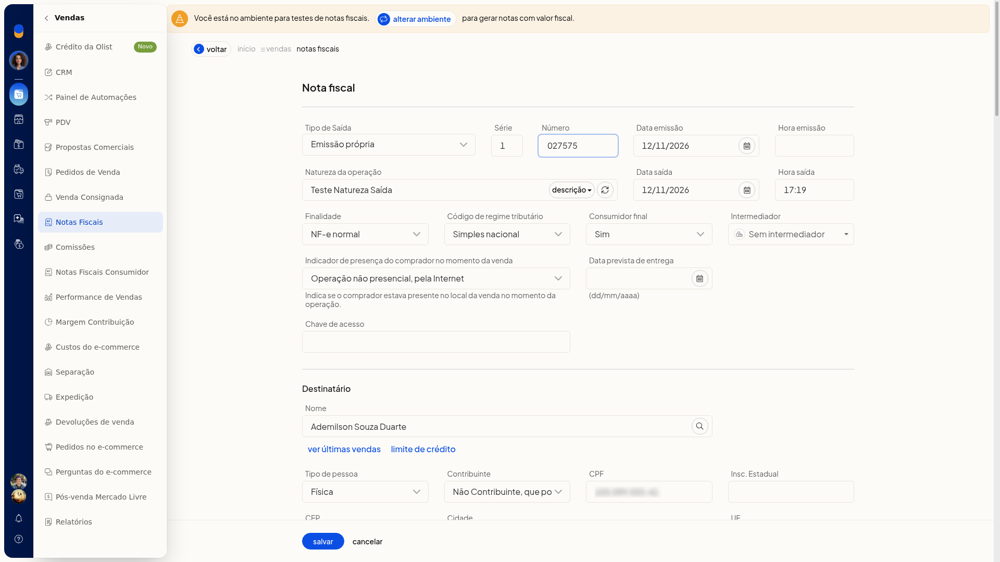
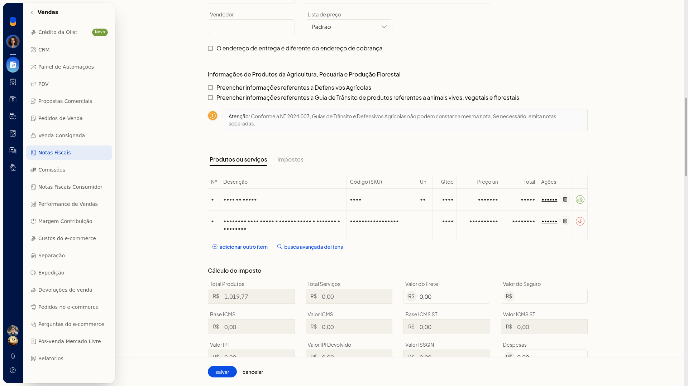
-
Confira os dados trazidos do pedido. Salvar grava a NF-e preenchida com os dados do pedido de venda.
Deixar o lote pronto para autorização
-
Em Vendas > Notas Fiscais, clique em Autorizar pendentes ou em Mais ações > Enviar notas pendentes. Os dois caminhos abrem o mesmo painel.
-
Aguarde a mensagem de acesso ao dispositivo de segurança.
-
No painel Lote de notas fiscais eletrônicas, confira o ambiente de homologação. Enviar notas fiscais por e-mail e Enviar notas fiscais rejeitadas anteriormente vêm desmarcadas. Leia o aviso de que só notas emitidas após 13/10/2026 serão enviadas.
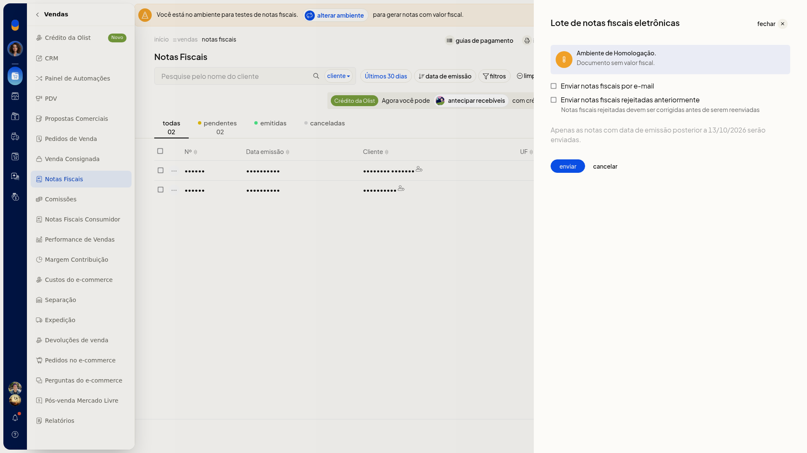
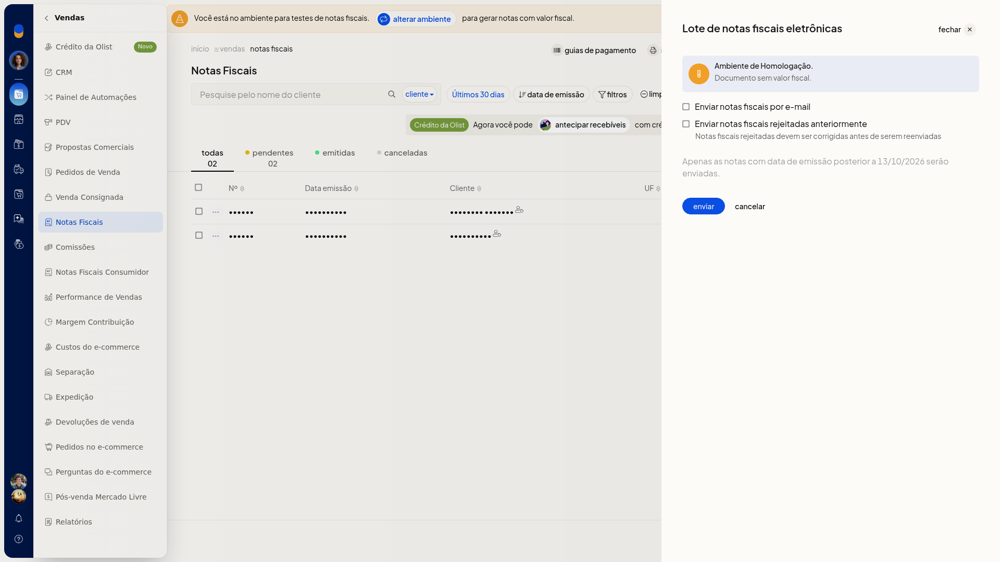
-
Confira o lote. Enviar dispara o envio em homologação. Cancelar fecha o painel sem enviar. O lote fica pronto para esse envio.
Autorizar pela nota
-
Em Vendas > Notas Fiscais, abra ••• na linha da nota.
-
Localize Autorizar no SEFAZ, junto de imprimir DANFE, compartilhar e salvar DANFE em PDF. Use Autorizar no SEFAZ quando quiser autorizar essa nota.
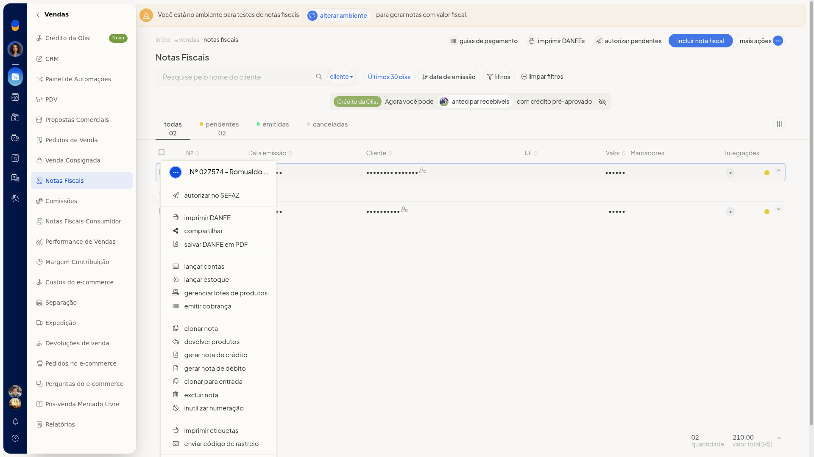
Resultado
A jornada de configurar para faturar exibe a configuração concluída e a mensagem de que já é possível emitir as notas fiscais. A lista de Notas Fiscais abre no ambiente de testes, com as situações todas, pendentes, emitidas e canceladas. A NF-e de saída fica preenchida, pronta para salvar, e o painel Lote de notas fiscais eletrônicas fica em homologação, pronto para envio.